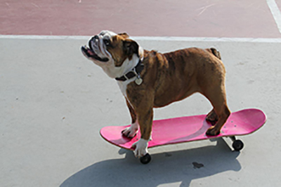

¡Skanturo cumple 51 años y lo festejamos con vos! Aprovecha nuestros descuentos en el local o vení a celebrarlo dentro del skatepark en el torneo n°50, que hace Skanturo todos los años, donde participan los mejores profesionales del país. Haciendo nuestros sueños realidad, nos hemos vuelto el skate shop más conocido gracias a nuestra increíble comunidad y esperamos seguir creciendo. Los esperamos en nuestro local o en nuestro parque para poder pasar una tarde ¡de pelos!

¡Skanturo Pet friendly!
¿Pasar la tarde con tu mejor amigo dentro de nuestro parque? ¡Ahora es posible!
A pedidos de muchos, habilitamos nuestro parque de skate para que puedan traer a sus mascotas. Queremos que todos sean parte de nuestra familia y eso incluye a nuestros queridos amigos peludos. Es de requisito obligatorio que traigan las correas y collares, con el número del dueño, de sus mascotas para prevenir posibles accidentes. ¡Los esperamos a todos el próximo lunes desde las 10 hasta las 19hs!